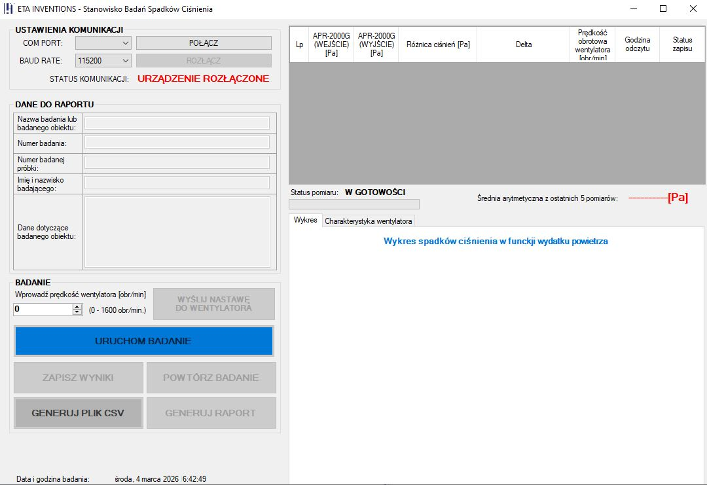

Project Goal: Automating Quality Assurance
The primary challenge was to replace manual, time-consuming testing with a reliable, computer-controlled system. The goal was to create a QA tool to accurately characterize aerodynamic performance and auto-generate standardized documentation.

My Role: System Architect & Sole Developer
As the sole designer, I was responsible for the entire system from concept to deployment. This involved:
- Designing the custom hardware controller and its USB protocol.
- Developing the C# (.NET) desktop application as the HMI.
- Implementing data acquisition and a statistical filtering algorithm.
- Integrating the solution into a production-ready test stand.
Technical Solution: Hardware-Software Co-Design
The desktop app communicates via USB with a custom controller managing a high-power fan and pressure sensors (0-2000Pa). The software automates the test sequence, filters data for accuracy, and generates PDF reports or CSV exports.
A detailed manual for software installation and operation of the SBSC 1.0 transducer has been developed for the test stand.
System Showcase
The desktop application provides a clean and functional interface for test management and data analysis.
